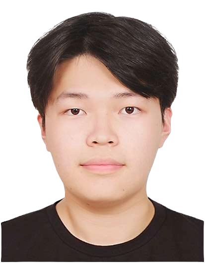

Game Programmer

Orchestrates the end-to-end development lifecycle by bridging technical constraints and creative visions to ensure consistent milestone delivery through effective resource management.
Architects intuitive systems and visual direction by designing complex menu flows and integrating dynamic UI components to maintain project continuity and interface consistency.
Enhances software stability and optimizes rendering performance by establishing TA/QA standards and resolving critical bugs within custom engine pipelines across diverse hardware.
Student Game Programmer Sangmin Seo
Hello! I am Sangmin Seo, a passionate student game programmer studying at DigiPen Institute of Technology. I specialize in C++ and graphics programming, always striving to build robust game engines and beautiful visual experiences.
When I'm not coding, I enjoy analyzing game mechanics and exploring new technologies. I am constantly learning and looking for opportunities to grow as a developer and contribute to amazing games.

A selection of my range of projects
Keimyung-DigiPen RTIS, Student Game Developer MAR 2024 - Present Daegu South Korea Collaborated as a multidisciplinary developer in a rigorous game engineering program, successfully delivering 3~4 team-based projects by pivoting between Producer, Design Lead, and QA roles. Established and enforced Technical Art (TA) and Quality Assurance (QA) standards for the 'Rescook' project, resulting in enhanced software stability and optimized rendering pipelines across diverse hardware. Managed the end-to-end development lifecycle for multiple titles, coordinating between technical and creative workflows to ensure all project milestones were met on schedule. Executed low-level systems programming and hardware-specific optimization using C++ and custom engine architectures, improving game performance and input responsiveness for a seamless user experience.
QA Engineer, Rescook Sept 2025 - Jun 2026 Daegu, South Korea 2D Top-down Side-scrolling Action Cooking Game. Collaborated with a team of 4 to deliver a polished gameplay experience, serving as the primary bridge between artistic vision and technical implementation. Architected the front-end menu systems and integrated dynamic UI components within the custom C++engine. Identified and resolved critical bugs within the UI logic and rendering pipeline to enhance overall software stability. Achieved high software stability and optimized rendering performance.
Design Lead, Dieski MAR 2025 - Jun 2025 Daegu, South Korea 2D First-person skiing game inspired by classic raycasting titles. Collaborated with a team of 4 to deliver a polished gameplay experience, assuming the Design Lead role to maintain project continuity and bridge artistic vision with technical execution. Designed the overall structure and navigation flow of the Setting menu system to ensure intuitive player control and interface consistency. Enhanced the low-level input handling framework to support hardware-specific Escape key mapping, resolving critical bugs in state management to ensure overall software stability. Assumed the Design Lead role to produce original 2D art and sound effects while optimizing the custom rendering pipeline for a consistent and responsive user experience.
Producer, Forest NAGA OCT 2024 - DEC 2024 Daegu, South Korea 2D Tower Defense with Auto-battler mechanics. Collaborated with a team of 3 to deliver a polished gameplay experience using C++ and the raylib framework, serving as the primary bridge between design and technical implementation. Conceptualized the hybrid gameplay loop by successfully integrating Auto-battler elements—such as gacha-based recruitment and 3-unit merging logic—into a traditional Tower Defense structure. Authored the narrative and environmental theme, focusing on a unique theme ( Nature vs Industry ) conflict that visually and mechanically differentiates unit deployment and enemy wave progression. Successfully delivered all project milestones on schedule by orchestrating frequent team communication and streamlining coordination between creative and technical workflows, ensuring a cohesive user experience through effective resource management.
Multi-disciplinary Project Lead, DigiPen Institute of Technology MAR 2024 - Present Daegu, South Korea Managed end-to-end project roadmaps and facilitated team synchronization to ensure consistent milestone delivery across multiple team-based initiatives. Served as the primary bridge between technical and creative workflows, translating complex engineering constraints into actionable design goals for smoother collaboration. Delivered high-quality results across diverse roles: as a Producer (scheduling and risk management), a Design Lead (UI architecture and visual direction), and a TA/QA (pipeline optimization and software stability). Developed a holistic "big picture" perspective of the game development lifecycle, evolving into a versatile leader capable of overseeing projects from initial concept to final technical polish.
Bachelor of Science in Computer Science in Real-Time Interactive Simulation Expected Graduation: 2030 Daegu, Korea & Redmond, WA, USA Relevant Courses: Computer Graphics, Game Implementation Techniques, Data Structures and Algorithms, Linear Algebra.